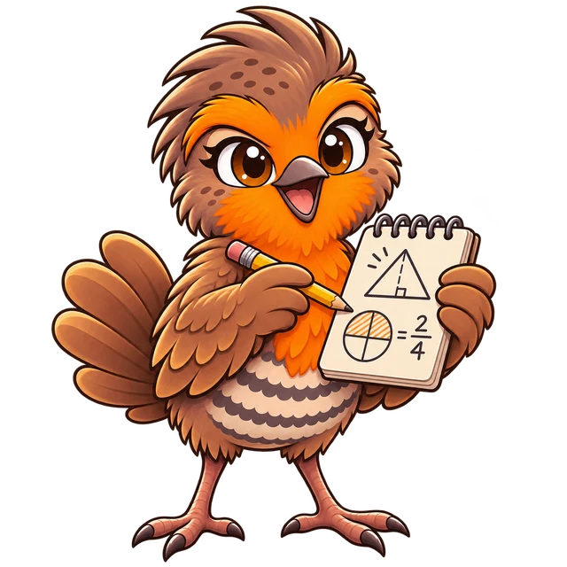

PROPUESTA EN EVALUACIÓN · PACE UACh
Chucao, nuestro compañero de aprendizaje
Simulación del cambio de mascota según el progreso en una unidad.
Cartoon 2D · 5 etapas

Etapa 3 de 5
Conecto
Relaciono conceptos, organizo ideas y voy entendiendo mejor.
Avance simulado de esta unidad52 %
Esta es una demo local. Las imágenes son estáticas. El control solo simula cambios de etapa; no guarda progreso ni se conecta con SIVEDUCMD o SCORM.
Las cinco imágenes del paquete
Inspección visual de cómo se reconocen las etapas juntas y a tamaño reducido.